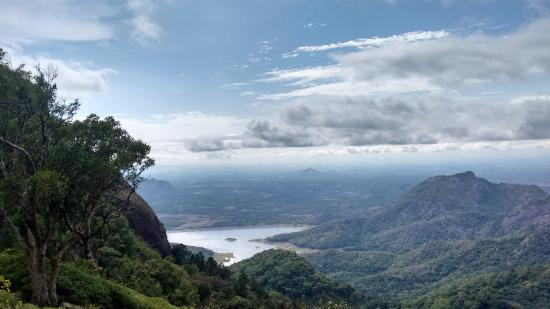
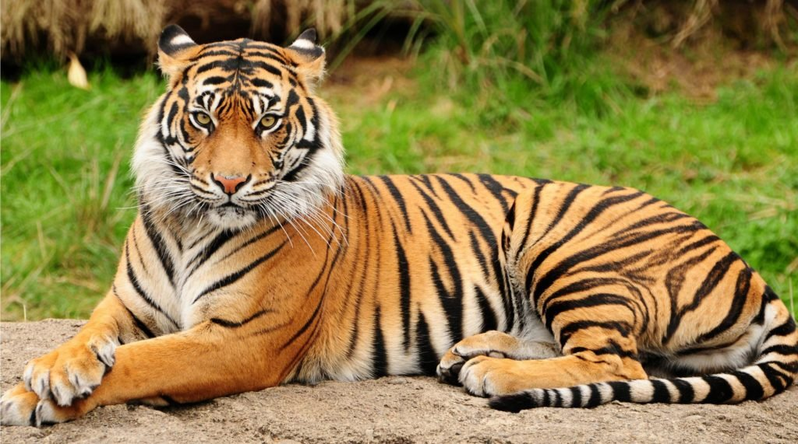
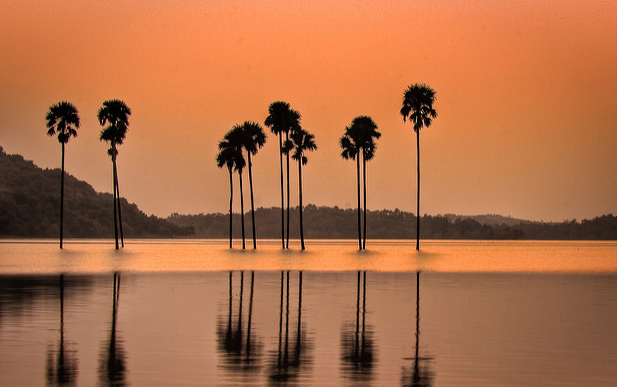

Nelliyampathy Hills
From the town of Nenmara in Palakkad district, the cloud-caressed peaks of the majestic Nelliyampathy Hill ranges are a sight to behold. The height of the hills ranges from 467 m to 1,572 m and it has an extremely calming effect on all who view it. To reach Nelliyampathy, one has to take the road starting from Nenmara that proceeds to the Pothundy Dam. There are about 10 hairpin bends that have to be negotiated on the way to Nelliyampathy.
The Pothundy Dam is a beautiful locale with facilities for boating and is a nice option as a picnic place. As the Ghat road winds its way up to Nelliyampathy, at certain places there are viewpoints from where the vast stretches of Palakkad district are visible with its extensive paddy fields forming a verdant carpet. It also offers a splendid view of the Palakkad Gap, which is a geographical phenomenon in the Western Ghats formation in this region, bringing into view, parts of the adjoining State of Tamil Nadu
How to Get Here
Nearest railway station: Palakkad, about 56 km; Thrissur and Shoranur, about 77 km Nearest airport: Cochin International Airport, about 115 km | Coimbatore International Airport, about 120 km | Calicut International Airport, about 150 km
Parambikulam Tiger Reserve
Parambikulam Tiger Reserve is situated at a distance of 89 kilometers from Palakkad and 44 km from Pollachi, adjacent to Anamalai Tiger Reserve in Tamil Nadu. Although Parambikulam belongs to the state of Kerala, it is accessible only via Pollachi in Tamilnadu.
The Parambikulam Tiger Reserve, a rich swathe of greenery brimming with wildlife, is a 285 square kilometer protected area cuddled in Palakkad.Like an oasis of remarkable serenity, located approximately 110 kilometers from Palakkad district, Parambikulam Wildlife Sanctuary is spot of exotic variety of flora and fauna. A kind of a heaven for travel photographers and wildlife enthusiasts, the area is home to such treasure of species as Nilgiri Tahr, Nilgiri Langur, Lion tailed macaque, spotted deer, Asian elephant, Indian wild dog and several different kinds of snakes and birds and spiders. Moreover, the park houses many distinct kinds of trees, primarily, neem, rosewood and sandalwood which form an incredible backdrop. Boat cruises are available from Parambikulam Reservoir. Trekking is one of the best ways to explore the wildlife sanctuaries but can only possible after permission as Eco-tourism packages. A tree house is also present in the Reserve Forest Area in Thoonakadavu while other lodgings offered by State Forest Department under Eco-tourism at Thoonakadavu, Thellikal and Elathode have comfortable accommodation for those wanting to experience wildlife from close quarters.
How to Get Here
Parambikulam Tiger Reserve is located within a close proximity to a quaint town called Pollachi. Visitors can either avail regular buses from this town or hire local taxis to reach Parambikulam Tiger Reserve.Coimbatore Railway Station; at a distance of 96km, serves as the nearest railway station to Parambikulam Tiger Reserve. Visitors from major Indian cities like Delhi, Mumbai, Chennai, Jaipur, Rajkot, Bikaner, Mangalore, and several others can reach Coimbatore, and avail regional buses or private vehicles to reach Parambikulam Tiger Reserve.Coimbatore Airport is the nearest airport to Parambikulam Tiger Reserve; distance is around 110km.
Malampuzha Garden and Dam


Malampuzha Garden in Palakkad district is the only rock-cut garden in South India made by Nek Chand, the renowned artist and winner of the prestigious Padmashree Award. The entire garden is made from broken pieces of bangles, tiles, used plastic cans, tins and other waste materials. Also situated in the gardens is the massive Malampuzha Yakshi (female vampire) built in 1969 by Kanayi Kunhiraman, a greatly respected sculptor from the state. It is a spectacular relic of art that we are lucky to still have with us. The flowering beds, fountains and rose gardens along with an aerial ropeway make it a place that instantly soothes your soul.
In the lower hills of the Western Ghats lies the beautiful Malampuzha township whose lush greenery and plethora of picnic spots make it a must-visit spot in these areas. It has really good trekking trails that are available to all with a penchant for the same. Malampuzha Gardens and the Irrigation Dam tend to be the areas that attract the highest number of visitors. Apart from being perfect picnic spots, there is a host of interesting trivia surrounding the place that adds to its appeal.
How to Get Here
Nearest railway station: Palakkad, about 9 km Nearest airport: Coimbatore International Airport, about 67 km | Calicut International Airport, about 106 km | Cochin International Airport, about 115 km
Kava Viewpoint
The gateway of rains to Kerala, Kava Viewpoint at Malampuzha in Palakkad district is the finest destination in the state to chase the monsoon amid a perfect background of hills and reservoir. Located behind Malampuzha Dam, Kava is also a favourite destination of shutterbugs for the splendid sunset in shining hues. The forest en route to Kava village is home to rare birds and butterflies.Kava offers you a calm and peaceful environment
How to Get Here
We can reach Kava through the road surrounding the Malampuzha Gardens starting from Olavakkod near Palakkad city.Nearest railway station: Palakkad.